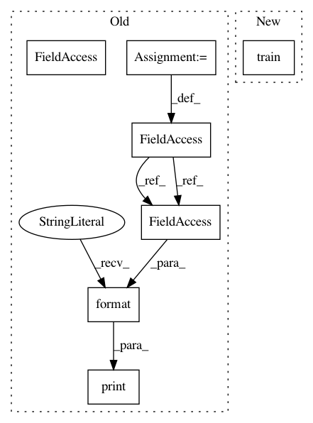

e1eb6a6b751d9d675066f1578c2b11fbd548f837,examples/metapath2vec.py,,,#,57
Before Change
for epoch in range(1, 6):
loss = train()
print("Epoch: {:02d}, Loss: {:.4f}".format(epoch, loss))
acc = test()
print("Accuracy: {:.4f}".format(acc))
After Change
for epoch in range(1, 6):
train(epoch)
acc = test()
print(f"Epoch: {epoch}, Accuracy: {acc:.4f}")
In pattern: SUPERPATTERN
Frequency: 3
Non-data size: 7
Instances
Project Name: rusty1s/pytorch_geometric
Commit Name: e1eb6a6b751d9d675066f1578c2b11fbd548f837
Time: 2020-05-18
Author: matthias.fey@tu-dortmund.de
File Name: examples/metapath2vec.py
Class Name:
Method Name:
Project Name: jindongwang/transferlearning
Commit Name: 376b01c2e338ec63e638f62a76d67f6a9323e47c
Time: 2019-08-14
Author: jindongwang@outlook.com
File Name: code/deep/DeepCoral/DeepCoral.py
Class Name:
Method Name:
Project Name: rusty1s/pytorch_geometric
Commit Name: 429cbddf70ddfb11826be8123fd34e34c4ed2c43
Time: 2020-05-31
Author: matthias.fey@tu-dortmund.de
File Name: examples/metapath2vec.py
Class Name:
Method Name: